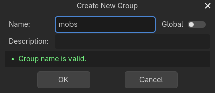
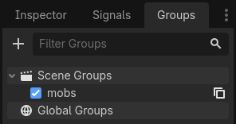

Giao diện HUD
Phần cuối cùng mà game cần là Giao diện người dùng (UI) để hiển thị những thứ như điểm số, thông báo "game over" và nút chơi lại.
Tạo một scene mới, nhấn nút "Other Node" và thêm một node CanvasLayer tên là HUD. "HUD" là viết tắt của "heads-up display", một lớp hiển thị thông tin xuất hiện chồng lên trên khung nhìn của game.
Node CanvasLayer cho phép ta vẽ các phần tử UI trên một lớp nằm phía trên phần còn lại của game, để thông tin hiển thị không bị che bởi bất kỳ phần tử nào của game như người chơi hay mob.
HUD cần hiển thị các thông tin sau:
Điểm số, được thay đổi bởi
ScoreTimer.Một thông báo, chẳng hạn "Game Over" hoặc "Get Ready!"
Một nút "Start" để bắt đầu game.
Node cơ bản cho các phần tử UI là Control. Để tạo UI, chúng ta sẽ dùng hai loại node Control: Label và Button.
Tạo các node sau làm node con của node HUD:
Label tên là
ScoreLabel.Label tên là
Message.Button tên là
StartButton.Timer tên là
MessageTimer.
Nhấn vào ScoreLabel và gõ một số vào trường Text trong Inspector. Font mặc định của các node Control khá nhỏ và không co giãn tốt. Trong asset của game có một file font tên là "Xolonium-Regular.ttf". Để dùng font này, hãy làm như sau:
Trong "Theme Overrides > Fonts", chọn "Load" và chọn file "Xolonium-Regular.ttf".

Cỡ chữ vẫn còn quá nhỏ, hãy tăng lên 64 trong "Theme Overrides > Font Sizes". Sau khi làm xong với ScoreLabel, hãy lặp lại các thay đổi cho các node Message và StartButton.

Ghi chú
Anchor: Các node Control có vị trí và kích thước, nhưng chúng cũng có anchor. Anchor xác định gốc - điểm tham chiếu cho các cạnh của node.
Sắp xếp các node như hình dưới. Bạn có thể kéo các node để đặt thủ công, hoặc để đặt chính xác hơn, hãy dùng "Anchor Presets".

ScoreLabel
Thêm văn bản
0.Đặt "Horizontal Alignment" và "Vertical Alignment" thành
Center.Chọn "Anchor Preset"
Center Top.
Message
Thêm văn bản
Dodge the Creeps!.Đặt "Horizontal Alignment" và "Vertical Alignment" thành
Center.Đặt "Autowrap Mode" thành
Word, nếu không label sẽ chỉ nằm trên một dòng.Trong "Control - Layout/Transform", đặt "Size X" thành
480để dùng toàn bộ chiều rộng màn hình.Chọn "Anchor Preset"
Center.
Kết nối HUD với Main
Giờ đã tạo xong scene HUD, hãy quay lại Main. Tạo instance của scene HUD trong Main giống như bạn đã làm với scene Player. Cây scene sẽ trông như sau, hãy kiểm tra để chắc chắn bạn không bỏ sót gì:

Bây giờ chúng ta cần kết nối chức năng của HUD với script Main. Việc này đòi hỏi thêm một vài thứ vào scene Main:
Trong tab Signals, kết nối signal start_game của HUD với hàm new_game() của node Main bằng cách nhấp nút "Pick" trong cửa sổ "Connect a Signal" và chọn phương thức new_game(), hoặc gõ "new_game" bên dưới "Receiver Method" trong cửa sổ. Kiểm tra để chắc chắn biểu tượng kết nối màu xanh lá giờ đã xuất hiện bên cạnh func new_game() trong script.
Trong new_game(), cập nhật phần hiển thị điểm và hiển thị thông báo "Get Ready":
$HUD.update_score(score)
$HUD.show_message("Get Ready")
var hud = GetNode<HUD>("HUD");
hud.UpdateScore(_score);
hud.ShowMessage("Get Ready!");
Trong game_over(), ta cần gọi hàm HUD tương ứng:
$HUD.show_game_over()
GetNode<HUD>("HUD").ShowGameOver();
Cuối cùng, thêm đoạn này vào _on_score_timer_timeout() để phần hiển thị luôn đồng bộ với điểm số đang thay đổi:
$HUD.update_score(score)
GetNode<HUD>("HUD").UpdateScore(_score);
Cảnh báo
Nhớ xóa lời gọi new_game() khỏi _ready() nếu bạn chưa làm, nếu không game sẽ tự động bắt đầu.
Giờ bạn đã sẵn sàng để chơi! Nhấp nút "Play the Project".
Xóa các creep cũ
Nếu bạn chơi đến khi "Game Over" rồi bắt đầu game mới ngay lập tức, các creep từ game trước có thể vẫn còn trên màn hình. Sẽ tốt hơn nếu tất cả chúng biến mất khi bắt đầu game mới. Ta chỉ cần một cách để bảo tất cả các mob tự xóa mình. Chúng ta có thể làm điều này bằng tính năng "group".
Trong scene Mob, chọn node gốc rồi nhấp tab Groups bên cạnh tab Signals và nút "+" để mở hộp thoại "Create New Group".

Đặt tên group là mobs và nhấp "ok" để thêm một scene group mới.

Giờ mọi kẻ địch sẽ thuộc group "mobs".

Sau đó, chúng ta có thể thêm dòng sau vào hàm new_game() trong Main:
get_tree().call_group("mobs", "queue_free")
// Note that for calling Godot-provided methods with strings,
// we have to use the original Godot snake_case name.
GetTree().CallGroup("mobs", Node.MethodName.QueueFree);
Hàm call_group() gọi hàm có tên đã cho trên mọi node trong một group - trong trường hợp này, chúng ta đang bảo mỗi mob tự xóa chính nó.
Đến đây game gần như đã hoàn thành. Trong phần tiếp theo và cũng là phần cuối, chúng ta sẽ trau chuốt nó một chút bằng cách thêm hình nền, nhạc lặp và một số phím tắt.